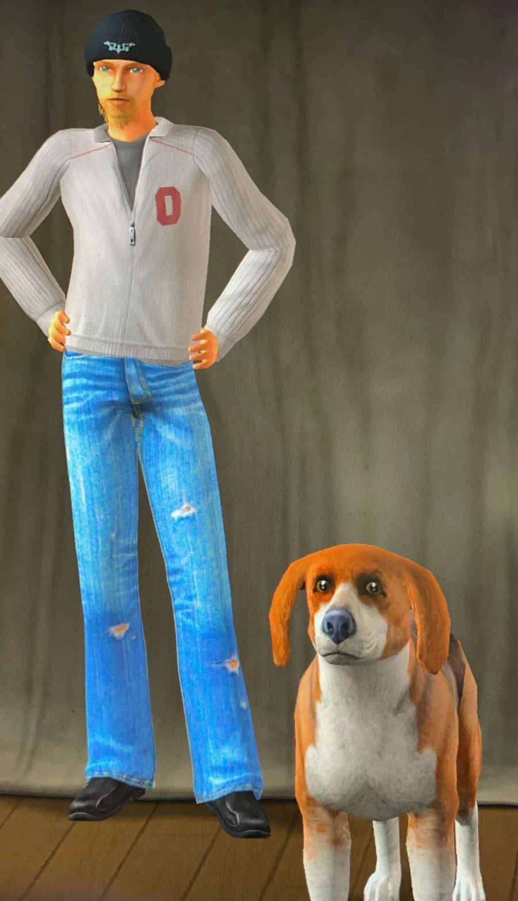

Build
Tools
Small utilities that do one job properly, and one large one that's trying to make a twenty-five-year-old game's files survive another twenty-five. If a thing I need doesn't exist, that's usually the start of a project.
About
I make tools, keep archives, and take an unreasonable number of notes. Most of what I do starts with "how does this actually work?" and ends as something somebody else can use — a utility, a checklist, a spec.
The work runs on Blender, Unreal Engine, Python and a lot of time in hex editors. It started with CSVmaker, a small utility for turning a folder tree into clean CSV data, and it's grown into two long projects: a Sims 1 preservation platform, and an episode-level index of a TV show nobody archived properly.

What I actually do
Build
Small utilities that do one job properly, and one large one that's trying to make a twenty-five-year-old game's files survive another twenty-five. If a thing I need doesn't exist, that's usually the start of a project.
Keep
Video, file formats, broadcast television. Material that was disposable when it was made and is now genuinely hard to find. Some of the video work lives on my YouTube channel.
Write
Every project generates documents — plans, findings, checklists. I've stopped treating those as private scaffolding and started publishing them. They're in the library.
Released
Free, no strings. More will land here as they get finished.
Point it at any folder and it walks every sub-directory, capturing full file paths into a clean CSV. Built for wrangling large collections — pictures, video, documents, game assets. It was my first release and it still gets used weekly.
The Sims 1 platform is in private development. There's a progress panel with numbers and screenshots on its own page, and it'll be downloadable here when it's ready to be.
Get in touch
The fastest way to reach me about anything on this site is a GitHub issue — it lands somewhere I actually look.
Colophon
Hand-written HTML, CSS and JavaScript. No framework, no build step,
no analytics, nothing loaded from anyone else's server. The project
panels read from JSON files generated by scripts in
tools/, so the numbers on this site are whatever the
projects last reported rather than something I typed in.
The orange is a painting of mine. The typeface is whatever serif your system reaches for first. This site used to be called Analog Atlas; it's just DNF now.
Nothing matches that.